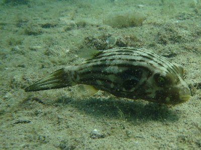
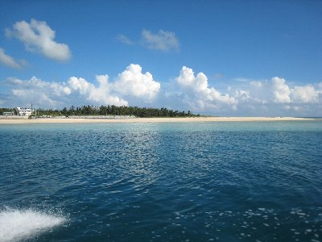
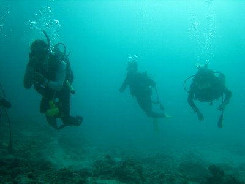

久米島でダイブ！ | 2008年9月 |
|---|---|
| いつもながらの遅い夏休み、しかも短い日程で金もないから海外にも行けず、去年と同じように沖縄でも行こうかと思っていたが、この際だからダイビングのＣカードとろうかな。と思い立ち格安ツアーを探した。沖縄本島でＣカード取得だと結構安い。でも、どうせ行くなら離島に行きたくて、久米島のＣカード取得ツアーに申し込みをしました。 心配した台風も、ちょうど久米島を通り過ぎた頃に、羽田を立ち久米島へ。 久米島空港は、以外にも綺麗で石垣島空港より近代的に見えました。しかし、誘導路はなく、停まっている機体は乗ってきた飛行機のみ。 | |
 翼の下は雲ばかり |  メチャ綺麗な海です |
| 初日は移動だけで終了。宿で酒でも飲もうと、コンビニで泡盛を買って帰る夜道、すれ違う人に友人の面影を見ました。 「あ〜、似ている人が居るものだと」 と思っていたら、「べっしー？」「え！」 な〜んて、偶然友人と遭遇！ いやいや、こんな最果てで会うとは、偶然とは恐ろしい〜(^_^) 友人たちは明日帰るんだって。あ〜、じゃあ台風の最中でしたか。それはそれは・・・ | |
 何が写っているか分かるかな〜 |  なんかボテッとした魚ですね〜。これなに？ |
| さて、ダイビングの講習ですが一日目は学科。丸一日ビデオ講習とテキスト講義、及びテスト。う〜ん、結構色々やるんだな〜〜 体内に窒素が残留しているなんて初めて知ったよ。その計算も。 で、二日目、三日目は海での講習。 海といっても港の浅いところでの実習からはじめます。やる内容は、機材のセッティングから水中でのマスククリアー、レギュレーターリカバリ、おもりの脱着、レギュが壊れたときの対処、ＢＣＤの脱着、緊急浮上などなど、こちらも色々と何回もやりました。一回だけ港ではなく、普通の海岸でやったけど、メチャ海が綺麗で魚も一杯でした！ | |
|  船で沖までGOOOOOO! |  この海底、ダイバーで混んでました |
| 残念ながら講習中だったので、デジカメは持っていけず（ＢＣＤ脱着も有るしね）写真が残ってないのですがね。 三日目の講習は午前で終わってしまうので、午後にツアー１本参加しました。ホントは連休で激混み状態だったから難しいって言われたんだけど。 その１本は久米島といえば「はての浜」と言われる沖合いの砂浜沖で、水深10ｍ位のところ。船で沖合いまで行き、船からダイブ！ 後ろ向きで海に落ちるのは初めてです。 初めての水深10ｍでしたが、以外に潜っていけるもんですね。 | |
 海の中の洞窟 |  この写真の左を向くと、サトウキビ田畑しかありません（笑 |
| ここも、サンゴ礁が死んでいる感じで、海が明るくありません。魚は沢山います。後で他の参加者に聞いたところ、午前中に潜った所の方が、透明度もサンゴも魚も良かったよ。という事なので、久米島全体がこんな感じではないようです。 そう聞くと、また来たくなっちゃうジャン！ | |
| 写真＆コメント ｂｙ べっしー | |